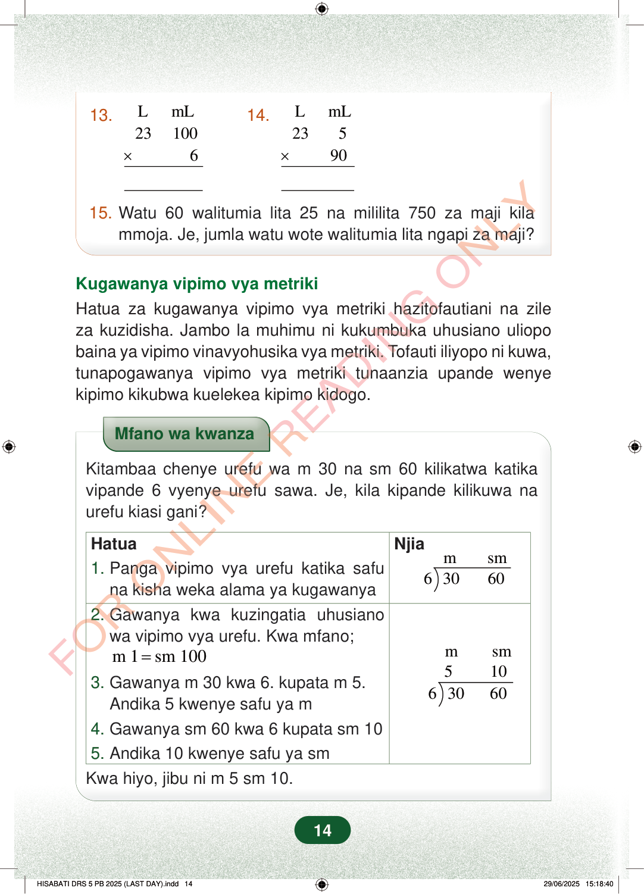

13.LmL231006×14.LmL23590×15.Watu 60 walitumia lita 25 na mililita 750 za maji kilammoja. Je, jumla watu wote walitumia lita ngapi za maji?Kugawanya vipimo vya metrikiHatua za kugawanya vipimo vya metriki hazitofautiani na zileza kuzidisha. Jambo la muhimu ni kukumbuka uhusiano uliopobaina ya vipimo vinavyohusika vya metriki. Tofauti iliyopo ni kuwa,tunapogawanya vipimo vya metriki tunaanzia upande wenyekipimo kikubwa kuelekea kipimo kidogo.Mfano wa kwanzaKitambaa chenye urefu wa m 30 na sm 60 kilikatwa katikavipande 6 vyenye urefu sawa. Je, kila kipande kilikuwa naurefu kiasi gani?Njiamsm63060Hatua1.Panga vipimo vya urefu katika safuna kisha weka alama ya kugawanya2.Gawanya kwa kuzingatia uhusianowa vipimo vya urefu. Kwa mfano;msm51063060m 1sm 100=3.Gawanya m 30 kwa 6. kupata m 5.Andika 5 kwenye safu ya m4.Gawanya sm 60 kwa 6 kupata sm 105.Andika 10 kwenye safu ya smKwa hiyo, jibu ni m 5 sm 10.14
13. L mL 23 100 6 ×
14. L mL 23 5 90 ×
15. Watu 60 walitumia lita 25 na mililita 750 za maji kila mmoja. Je, jumla watu wote walitumia lita ngapi za maji?
Kugawanya vipimo vya metriki Hatua za kugawanya vipimo vya metriki hazitofautiani na zile za kuzidisha. Jambo la muhimu ni kukumbuka uhusiano uliopo baina ya vipimo vinavyohusika vya metriki. Tofauti iliyopo ni kuwa, tunapogawanya vipimo vya metriki tunaanzia upande wenye kipimo kikubwa kuelekea kipimo kidogo.
Mfano wa kwanza
Kitambaa chenye urefu wa m 30 na sm 60 kilikatwa katika vipande 6 vyenye urefu sawa. Je, kila kipande kilikuwa na urefu kiasi gani?
Njia m sm 6 30 60
Hatua 1. Panga vipimo vya urefu katika safu na kisha weka alama ya kugawanya
2. Gawanya kwa kuzingatia uhusiano wa vipimo vya urefu. Kwa mfano;
m sm 5 10 6 30 60
m 1 sm 100 = 3. Gawanya m 30 kwa 6. kupata m 5. Andika 5 kwenye safu ya m 4. Gawanya sm 60 kwa 6 kupata sm 10 5. Andika 10 kwenye safu ya sm
Kwa hiyo, jibu ni m 5 sm 10.
14
Maswali ya hisabati ya kuzidisha lita na mililita: lita 23 mililita 100 mara 6, na lita 23 mililita 5 mara 90. Pia kuna swali la kupata jumla ya maji yaliyotumiwa na watu 60 ikiwa kila mtu alitumia lita 25 na mililita 750.13.L mL23 100× 614.L mL23 5× 9015.Watu 60 walitumia lita 25 na mililita 750 za maji kila mmoja.Je, jumla watu wote walitumia lita ngapi za maji?Kugawanya vipimo vya metrikiHatua za kugawanya vipimo vya metriki hazitofautiani na zile za kuzidisha.Jambo la muhimu ni kukumbuka uhusiano uliopo baina ya vipimo vinavyohusika vya metriki.Tofauti iliyopo ni kuwa, tunapogawanya vipimo vya metriki tunaanzia upande wenye kipimo kikubwa kuelekea kipimo kidogo.Mfano wa kugawanya vipimo vya urefu. Kitambaa cha mita 30 na sentimita 60 kikigawanywa kwa 6, kila kipande ni mita 5 na sentimita 10; hatua za kufanya hivyo zimeonyeshwa kwenye jedwali.Mfano wa kwanzaKitambaa chenye urefu wa m 30 na sm 60 kilikatwa katika vipande 6 vyenye urefu sawa.Je, kila kipande kilikuwa na urefu kiasi gani?HatuaNjia1. Panga vipimo vya urefu katika safu na kisha weka alama ya kugawanyam sm6 ) 30 602. Gawanya kwa kuzingatia uhusiano wa vipimo vya urefu.Kwa mfano; m 1 = sm 1003. Gawanya m 30 kwa 6. kupata m 5.Andika 5 kwenye safu ya mm sm5 106 ) 30 604. Gawanya sm 60 kwa 6 kupata sm 105. Andika 10 kwenye safu ya smKwa hiyo, jibu ni m 5 sm 10.